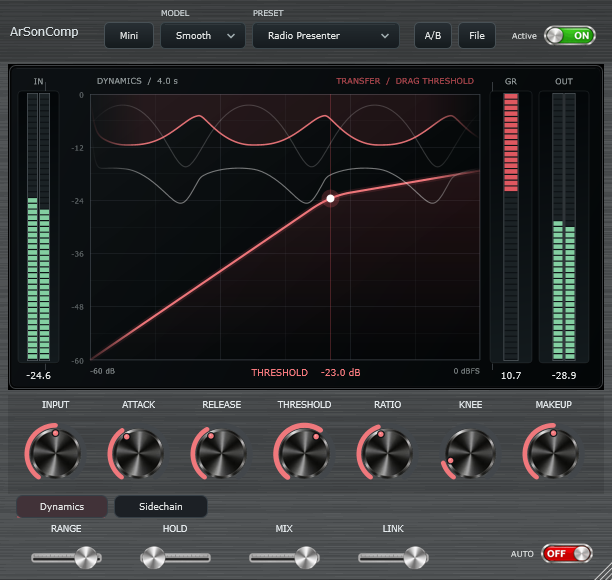

◉
Three distinct characters
Move between Clean, Feedback and Smooth compression styles to match the material and the moment.
Shape vocals, polish music, and keep live audio under control. An expressive compressor with a focused interface, precise metering, and a signal path designed for responsive performance.

Intuitive controls and meaningful feedback, designed for fast decisions—not menu diving.
Move between Clean, Feedback and Smooth compression styles to match the material and the moment.
Read the transfer curve, compression history, and input, reduction, and output meters in one focused display.
External sidechain, detector filtering, stereo link, Peak/RMS detection, and listening when you need them.
46 factory starting points, searchable presets, A/B comparisons, automation, and host project recall.
A hardware-inspired brushed-metal surface with precise tactile controls. Switch contexts without losing track of the audio.
Download the installer for your system. Every file is hosted on the official ArSonComp GitHub Release.
Windows 10 & 11 · x64
Download for WindowsApple Silicon & Intel · macOS 11+
Download for macOSUbuntu & Debian · x86_64
Download .deb installerv0.2.0-rc.1 · Public Release Candidate — Cross-platform CI passed; physical interface/DAW validation remains in progress. macOS PKG is not Apple notarized. Release notes SHA-256 checksums
Run the OS installer. On Windows choose current-user or all-user VST3 installation; macOS may require approval in Privacy & Security.
Restart or rescan the VST3 plugins in your DAW/mixer. Or open the Standalone application and select your audio interface.
Choose a preset or start with Clean, 2:1, and adjust Threshold for around 3–6 dB of gain reduction.
Thoughtful dynamics processing. Less friction between what you hear and what you create.
Get ArSonComp